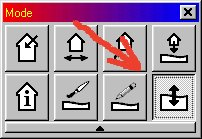
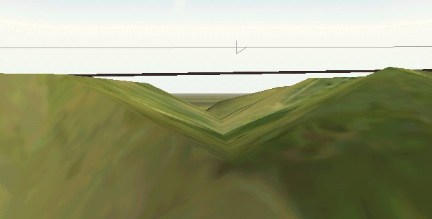
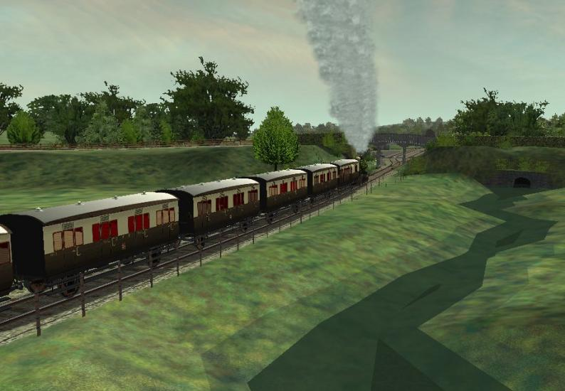
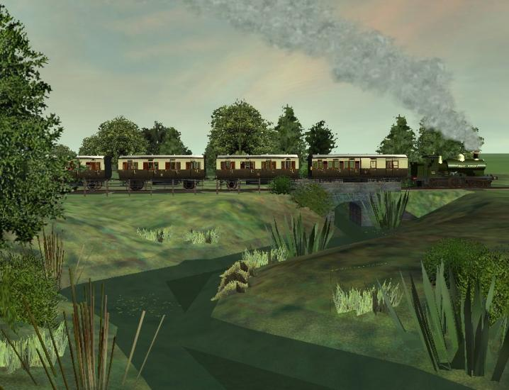

Creating a Small Stream in MSTS Route Editor
by "Saddletank"
(a regular contributor on www.uktrainsim.com)
Go into wire frame mode (hit W);
Select the single terrain node adjust tool (the lower right button in the block of eight);

Click on a terrain node and then manually sink down each node to make a stream bed, using Numpad2 keypad with the NumLock Off.
Using the END key with Numpad2 gives you more control
- the depression movement is slower. If your node goes down too far, bring it back up again with END+Numpad8.
It helps if you have your water toggled on first and set to the height and slope you need, then as the terrain node goes down it goes darker as it touches the water, so you know when you have hit the right depth. Once you get the hang of it you can trot along your stream bed pretty fast - almost holding down the END & Numpad2 keys while sliding the mouse along your planned stream. It helps to have a marker file defining the stream if you don't already have a good idea of where it's going.
The stream can be made to wander around in the way streams do by just changing direction from node to node. Keep an eye on the general direction you want to go in.
The granularity of the MSTS terrain is a bit coarse for very fine control but once you get the feel of the various triangle shapes of the terrain you can get quite a good representation of a meandering watercourse, particularly if you push the nodes down to different levels - this alters the width of the stream.
The image below shows a "stream bed" under construction.

Note that this was for a fairly small stream with a water width of 2 - 4 m and a width of 16m between banks - the smallest watercourse MSTS lets you dig. Each MSTS terrain triangle is 8m long, and if you push one node down to make the water channel you are pulling down with it one terrain triangle on each side - hence the 16m minimum width.
If your water level is very close to the surface (1 to 2 m) you can make a stream that appears quite shallow and gentle with very shallow sides - a typical English babbling brook. If your water level is quite a bit lower (say 3 to 4 m) then you will obviously have to pull the centre node down further thus creating steeper banks. This can still have the appearance of a small stream if you make it windy enough but it has a less gentle character to it.
Here are a couple of images of a stream dug this way.

In the image below, I have added plants (as your can see, coating the bank with bushes and trees makes a big difference). To get an idea of scale, the 4-wheeled coaches are about 10m long.
